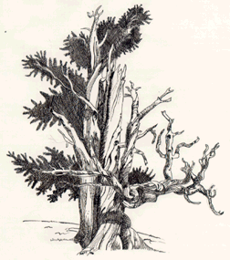

Student Project
Amy

In the sunrise hundreds
of shadowy figures
are exposed
They are a symbol of
strength
Surviving the hot
desolate terrain has
been a challenge but
they show us that
nothing is impossible
-Amy
c. Amy
ALbert Lowry High School
Winnemucca, Nevada USA
Pen and Ink 9 "X12"
Bristlecone Pine
Latin Name: Pinus Aristata
Age: 4,600 years
Circumference: TBA
Location: Great Basin National Park
Ely, Nevada
 Return to Main Page
Return to Main Page
June Julian jj68@nyu.edu